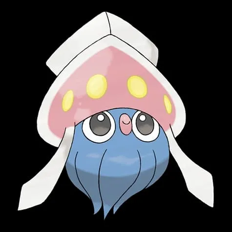
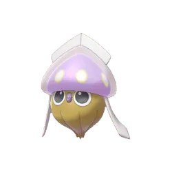
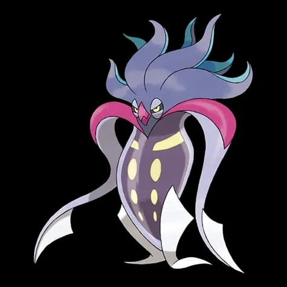
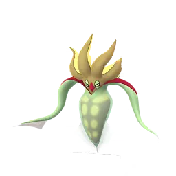
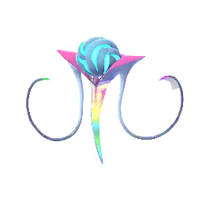
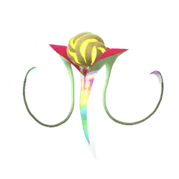

🧭 Quick Navigation
📖 Introduction
Mega Malamar introduces a new level of challenge in Pokémon GO through Super Mega Raid mechanics, requiring strong coordination, Mega evolutions, and well-prepared teams to defeat efficiently.
The Mega Evolution of Malamar brings significant stat boosts and stronger attacks to raid battles. Because of its Dark and Psychic typing, Mega Malamar can resist several common attack types, making it a durable raid boss that requires strong counters to defeat efficiently.
However, Mega Malamar also has a major weakness: Bug-type attacks deal massive damage to it. Using powerful Bug Pokémon can quickly turn the battle in your favor.
Mega Malamar is useful because:
- It boosts Dark and Psychic-type attackers
- It is relatively easy to defeat compared to other Mega Pokémon
In this raid guide, we will cover Mega Malamar’s stats, weaknesses, the best Pokémon counters, CP ranges, shiny availability, and important battle strategies so trainers can defeat the raid boss and maximize their rewards.
🧠 Mega Malamar Raid Strategy
Mega Malamar is a Dark and Psychic-type Pokémon featured in Super Mega Raids, making it more challenging than standard Mega raids.
These raids require large groups of trainers (8–10 players) and at least one Mega Pokémon per player to break raid shields effectively.
- 🐛 Bug-type Pokémon are the BEST counters due to double weakness
- ✨ Fairy-types are secondary options
- ⚡ Use Mega Pokémon like Mega Pinsir or Mega Scizor
- 👥 Coordinate with your team for faster shield breaks
Related guides: Mega Ampharos | Mega Audino
💡 Expert Insight
Mega Malamar presents a unique challenge due to its Dark and Psychic typing, which removes the usual weaknesses associated with Psychic-type Pokémon. This makes standard counter strategies less effective and requires more careful team planning.
Its primary weakness to Bug-type attacks stands out as the most reliable way to deal high damage. Trainers who focus on strong Bug-type attackers can significantly reduce battle time, while other types may struggle to keep up in terms of efficiency.
Because Mega Malamar can have diverse movesets, survivability becomes just as important as damage output. Balanced teams that combine strong counters with durable Pokémon tend to perform better, especially in smaller groups.
As a Mega raid, coordinating a Mega Evolution that boosts Bug-type attacks can greatly improve overall team performance. This not only speeds up the battle but also helps maximize Mega Energy rewards.
📊 Mega Malamar Stats
| Type | Dark / Psychic |
| Max CP | 3554 |
| Weather Boost | Foggy, Windy |
| Shiny | Yes |
| Base Attack | 177 |
| Base Defence | 165 |
| Base Stamina | 200 |
Malamar is not very bulky compared to legendary raid bosses, so experienced trainers can defeat it solo or with a small group.
Super Mega Raid Mechanics
Mega Malamar appears in Super Mega Raids, which are significantly harder than standard Mega raids. These battles include special shield mechanics that reduce incoming damage. Trainers must use Mega-evolved Pokémon to break these shields before dealing full damage. Due to its high durability, this raid typically requires at least 7–10 trainers for a smooth victory.
🎯 Catch CP & 100% IV
After defeating Mega Malamar, you’ll encounter a wild Malamar.
CP Range:
- No Weather Boost: 1717-1796 CP
- Weather Boost: 2146-2,245 CP
100% IV:
- 1796 (Normal)
- 2245 (Weather Boosted)
Use:
- Golden Razz Berry
- Curveball Excellent Throws
⚠️ Mega Malamar Weaknesses
| Category | Details |
|---|---|
| ❌ Weak To: |
 Bug • Bug •
 Fairy Fairy
|
| ✅ Resistant To: |
 Psychic Psychic
|
Notes: Mega Malamar’s most important weakness is its double weakness to Bug-type moves. This makes strong Bug attackers the most efficient and fastest counters available.
🗡️ Best Counters for Mega Malamar
The best way to defeat Mega Malamar is to use strong Bug-type Pokémon because of its double weakness to Bug.
🐞 Bug-Type Counters (Best Overall Choice)
Because of its double weakness to Bug, Bug-type Pokémon deal massive super-effective damage and are the top priority in this raid.
- Fury Cutter + X-Scissor
- Bug Bite + Bug Buzz
- Mega Bug Pokémon provide strong team-wide boosts
- Scizor: (Fury Cutter / X-Scissor)
- Scolipede: (Bug Bite / X-Scissor)
- Beedrill: (Bug Bite / X-Scissor)
One of the strongest Bug attackers with Mega boost for teammates.
Extremely high attack stat, deals huge damage quickly./p>
Excellent Mega option to boost Bug-type damage.
🧚 Fairy-Type Counters
Fairy-types deal super-effective damage to Dark typing and are a solid secondary option. They also resist Dark-type moves.
- Charm + Dazzling Gleam
- Fairy Wind + Play Rough
🔥 Why Bug-Type Counters Are Essential
Mega Malamar’s Dark/Psychic typing makes it especially weak to Bug-type attacks.
- 🐛 Bug-type moves deal massive damage (double weakness)
- ✨ Fairy-types provide consistent secondary damage
- 🧠 Psychic moves are ineffective due to strong resistance
Raid Difficulty
Mega Malamar is considered a high-difficulty raid. Smaller groups may struggle unless using top-tier counters and Mega boosts. Coordinated teams with strong Bug, Fairy, or Fighting-type attackers are recommended.
🏆 Best Regular Counters
Regular pokemon that amplify the right types give you a powerful edge. Below are top Regular counters with short notes on why they excel.
| Pokémon | 🗡️ Fast Moves | 💥 Charged Moves | 🔄 Elite Moves | 🏆 Best Moves | 🧪 Why This Counter Works |
|---|---|---|---|---|---|
| Scyther | Air Slash / Fury Cutter | Aerial Ace / Trailblaze / X-Scissor / Night Slash | Steel Wing / Bug Buzz | Fury Cutter and Bug Buzz | Fury Cutter and Bug Buzz deal double super-effective Bug-type damage, making Scyther extremely efficient against Mega Malamar’s 4× Bug weakness. |
| Frosmoth | Bug Bite / Powder Snow | Ice Beam / Bug Buzz / Icy Wind / Hurricane | None | Bug Bite and Bug Buzz | Bug Bite and Bug Buzz exploit Mega Malamar’s double weakness to Bug, dealing massive super-effective damage. |
| Escavalier | Counter / Bug Bite | Aerial Ace / Acid Spray / Drill Run / Megahorn | Razor Shell | Bug Bite and Megahorn | Bug Bite and Megahorn deliver heavy Bug-type damage, fully exploiting the 4× weakness. |
| Centiskorch | Bug Bite / Ember | Bug Buzz / Lunge / Heat Wave / Crunch | None | Bug Bite and Bug Buzz | Bug Bite and Bug Buzz apply strong super-effective damage while maintaining solid DPS output. |
| Pinsir | Rock Smash / Bug Bite / Fury Cutter | Vise Grip / Close Combat / Superpower / X-Scissor | Submission | Bug Bite and X-Scissor | Bug Bite and X-Scissor rapidly apply double super-effective Bug damage for fast raid clears. |
| Yanmega | Wing Attack / Bug Bite | Aerial Ace / Ancient Power / Bug Buzz | None | Bug Bite and Bug Buzz | Bug Bite and Bug Buzz fully exploit Mega Malamar’s double Bug weakness for high sustained DPS. |
| Scizor | Fury Cutter / Bullet Punch | Iron Head / Trailblaze / X-Scissor / Night Slash | None | Fury Cutter and X-Scissor | Fury Cutter and X-Scissor deal consistent double super-effective Bug damage while Scizor resists Psychic moves. |
| Kleavor | Quick Attack / Air Slash / Fury Cutter | Rock Slide / Stone Edge / X-Scissor / Trailblaze | None | Fury Cutter and X-Scissor | Fury Cutter and X-Scissor take advantage of the 4× Bug weakness for strong offensive pressure. |
| Vikavolt | Mud Slap / Bug Bite / Spark | Fly / X-Scissor / Discharge / Crunch | Volt Switch | Bug Bite and X-Scissor | Bug Bite and X-Scissor provide powerful Bug-type damage, hitting Mega Malamar for double super-effective damage. |
| Pheromosa | Low Kick / Bug Bite | Focus Blast / Close Combat / Bug Buzz / Lunge | None | Bug Bite and Bug Buzz | With extremely high Attack, Pheromosa’s Bug Bite and Bug Buzz produce some of the highest Bug-type DPS in the game. |
| Kartana | Air Slash / Fury Cutter / Razor Leaf | Aerial Ace / Sacred Sword / X-Scissor / Leaf Blade / Night Slash | None | Razor Leaf and Leaf Blade | Provides team-wide type boost while contributing moderate neutral damage. |
| Genesect | Fury Cutter / Metal Claw | Hyper Beam / X-Scissor / Magnet Bomb | Techno Blast | Fury Cutter and X-Scissor | Fury Cutter and X-Scissor deliver strong Bug-type damage while benefiting from Genesect’s high offensive stats. |
| Volcarona | Bug Bite / Fire Spin | Hurricane / Bug Buzz / Overheat / Solar Beam | None | Bug Bite and Bug Buzz | Bug Bite and Bug Buzz deal double super-effective damage, making Volcarona one of the strongest Bug attackers. |
👤 Best Shadow Counters
Shadow pokemon that amplify the right types give you a powerful edge. Below are top Shadow counters with short notes on why they excel.
| Pokémon | 🗡️ Fast Moves | 💥 Charged Moves | 🔄 Elite Moves | 🏆 Best Moves | 🧪 Why This Counter Works |
|---|---|---|---|---|---|
| Shadow Vikavolt | Mud Slap / Bug Bite / Spark | Fly / X-Scissor / Discharge / Crunch | Volt Switch | Mud Slap and Fly | Shadow boost increases Bug-type damage by 20%, making this one of the highest DPS counters against Mega Malamar. |
| Shadow Scizor | Fury Cutter / Bullet Punch | Iron Head / Trailblaze / X-Scissor / Night Slash | None | Fury Cutter and X-Scissor | Shadow boost increases Bug-type DPS significantly while Scizor resists Psychic-type moves. |
| Shadow Pinsir | Rock Smash / Bug Bite / Fury Cutter | Vise Grip / Close Combat / Superpower / X-Scissor | Submission | Rock Smash and Close Combat | Shadow boost increases Bug-type damage by 20%, making this one of the highest DPS counters against Mega Malamar. |
| Shadow Escavalier | Counter / Bug Bite | Aerial Ace / Acid Spray / Drill Run / Megahorn | Razor Shell | Counter and Megahorn | Shadow boost increases Bug-type damage by 20%, making this one of the highest DPS counters against Mega Malamar. |
| Shadow Scyther | Air Slash / Fury Cutter | Aerial Ace / Trailblaze / X-Scissor / Night Slash | Steel Wing / Bug Buzz | Steel Wing and Bug Buzz | Shadow boost increases Bug-type damage by 20%, making this one of the highest DPS counters against Mega Malamar. |
| Shadow Accelgor | Acid / Water Shuriken / Infestation | Focus Blast / Acid Spray / Bug Buzz / Signal Beam | Energy Ball | Acid and Focus Blast | Shadow boost increases Bug-type damage by 20%, making this one of the highest DPS counters against Mega Malamar. |
| Shadow Crustle | Smack Down / Fury Cutter | Rock Blast / Rock Slide / Rock Wrecker / X-Scissor | None | Smack Down and Rock Wrecker | Shadow boost increases Bug-type damage by 20%, making this one of the highest DPS counters against Mega Malamar. |
| Shadow Galvantula | Fury Cutter / Volt Switch | Cross Poison / Bug Buzz / Lunge / Energy Ball / Discharge | None | Volt Switch and Bug Buzz | Shadow boost increases Bug-type damage by 20%, making this one of the highest DPS counters against Mega Malamar. |
| Shadow Scolipede | Poison Jab / Poison Sting / Bug Bite | Megahorn / Sludge Bomb / X-Scissor / Gyro Ball | None | Poison Jab and Megahorn | Shadow boost increases Bug-type damage by 20%, making this one of the highest DPS counters against Mega Malamar. |
⚡ Best Mega Counters
Mega pokemon that amplify the right types give you a powerful edge. Below are top Mega counters with short notes on why they excel.
| Pokémon | 🗡️ Fast Moves | 💥 Charged Moves | 🔄 Elite Moves | 🏆 Best Moves | 🧪 Why This Counter Works |
|---|---|---|---|---|---|
| Mega Scizor | Fury Cutter / Bullet Punch | Night Slash / Iron Head / X-Scissor / Trailblaze | None | Fury Cutter and X-Scissor | Mega Scizor boosts all Bug-type teammates while dealing double super-effective Bug damage itself. |
| Mega Beedrill | Poison Jab / Poison Sting / Infestation | Aerial Ace / Sludge Bomb / X-Scissor / Fell Stinger | Bug Bite / Drill Run | Bug Bite and X-Scissor | Mega Beedrill provides one of the strongest Bug-type Mega boosts while dealing extremely high DPS. |
| Mega Pinsir | Fury Cutter / Bug Bite / Rock Smash | Vise Grip / X-Scissor / Close Combat / Superpower | Submission | Bug Bite and X-Scissor | Mega Pinsir delivers massive Bug-type DPS and boosts Bug-type allies during the raid. |
| Mega Heracross | Counter / Struggle Bug | Close Combat / Upper Hand / Earthquake / Rock Blast / Megahorn | None | Struggle Bug and Megahorn | Mega Heracross combines strong Bug-type damage with team-wide Bug boosts for faster raid clears. |
👥 Raid Difficulty & Team Size
Mega Malamar is considered a difficult Super Mega raid.
| Player Level | Recommended Trainers |
|---|---|
| Beginner | 10+ players |
| Intermediate | 8–10 players |
| High-Level | 5–7 players (strong teams) |
💊 Revive & Potion Cost
- Average revives used: 8–14
- Average potions used: 10–18
- Dodging significantly reduces resource usage
- Using Mega Pokémon reduces total relobbies
Strategy Guide
Focus on using Bug-type attackers as Mega Malamar has a double weakness to Bug-type moves. Activate Mega Evolution bonuses to boost team damage and break shields faster. Avoid using Psychic-type Pokémon, as they are resisted. Coordinating charged attacks and using weather boosts can significantly reduce raid completion time.
🧩 Best Team Compositions
🔥 Optimal DPS Team (Fastest Clear – 2 to 3 Trainers)
- Volcarona
- Pheromosa
- Genesect
- Scizor (Fury Cutter + X-Scissor)
- Yanmega
- Heracross
✔ All Pokémon deal double super-effective damage ✔ Ideal for Rainy weather (Bug boost) ✔ Fastest possible raid clear time
🛡 Balanced Team (3 to 5 Trainers – Safer Clear)
- Volcarona
- Genesect
- Scizor (Fury Cutter + X-Scissor)
- Xerneas (Geomancy + Moonblast)
- Togekiss (Charm + Dazzling Gleam)
- Heracross
✔ Combines Bug DPS with Fairy bulk ✔ More forgiving against Dark-type charged moves ✔ Recommended for mixed-skill lobbies
💰 Budget / Accessible Team
- Scizor (Fury Cutter + X-Scissor)
- Yanmega
- Heracross
- Pinsir
- Vikavolt
- Beedrill
✔ No Mythicals required ✔ Still benefits from double weakness ✔ Ideal for newer trainers
🎯 How to Catch Mega Malamar
- 🟡 Use Golden Razz Berry
- 🎯 Aim for Excellent Curveball throws
- ⏳ Throw after attack animation
👥 Raid Difficulty & Trainers Needed
Recommended Group Size
- 2 Trainers: Easy with strong Bug counters
- 3 Trainers: Very safe clear
- 4+ Trainers: Extremely comfortable
Thanks to its double weakness, Mega Malamar is not among the hardest Mega raids. Proper Bug-type teams can clear it quickly.
🧠 Raid Strategy
1. Focus on Bug-Type Damage
Build your team around high-DPS Bug attackers to take full advantage of the double weakness.
2. Avoid Psychic Attackers
Mega Malamar double resists Psychic moves, making them extremely inefficient.
3. Coordinate Mega Evolution Boosts
Activating a Mega Bug Pokémon early increases team-wide Bug damage and speeds up the raid significantly.
Mega Malamar’s dual Dark and Psychic typing gives it vulnerabilities primarily to Bug, Fairy, and Ghost-type attacks. Pokémon like Togekiss, Gardevoir, and Chandelure can exploit these weaknesses effectively when they have strong charged moves like Dazzling Gleam or Shadow Ball. Prioritizing counters that hit multiple weaknesses at once will speed up the raid clear time significantly.
Weather conditions have a meaningful impact on this raid. In Partly Cloudy or Foggy weather, Dark and Ghost moves get a boost, making them even more effective against Mega Malamar. Trainers should adapt their team choices accordingly — bringing Bug- or Fairy-type counters when weather boosts are favorable. If weather conditions are neutral, focusing on balanced teams that include at least one Fairy, one Bug, and one Ghost counter ensures you’re ready for most raid conditions.
Dodging charged attacks like Psychic and Dark Pulse can improve your team’s survivability, especially in smaller raid groups. While not every attack needs to be dodged, focusing on avoiding high-damage charged moves buys your counters more time to deal damage. When battling with multiple trainers, coordinate your Mega Evolutions and strongest counters first — this helps apply pressure early and reduces the chance of fainting before the boss goes down.
Lastly, balance your team so that your strongest DPS counters are supported by bulkier Pokémon who can survive longer. This helps maintain DPS output even when some counters faint mid-battle. With proper weather consideration, tactical dodging, and smart counter selection, Mega Malamar can be defeated with speed and efficiency.
🌦️ Weather Boost
Mega Malamar gets a weather boost in:
🌫️ Foggy Weather
- Boosts Dark-type moves (very helpful)
🌬️ Windy Weather
- Boosts Psychic-type moves (very helpful)
🌧️ Rainy Weather
- Boosts Bug-type moves (excellent condition)
☁️ Cloudy Weather
- Boosts Fairy moves
Rainy weather is ideal because it strengthens Bug-type counters, maximizing damage output.
🌀 Mega Malamar Moveset
The best moveset for Mega Malamar is:
🗡️ Fast Moves
- Peck
- Psycho Cut
- Psywave
💥 Charged Moves
- Hyper Beam
- Psybeam
- Foul Play
- Superpower
🎮 Is Mega Malamar Good in PvE and PvP ?
PvE (Raids)
Malamar is not considered a top raid attacker due to its moderate attack stat. Other Dark or Psychic Pokémon perform much better in raids.
PvP
Malamar can be useful in Great League and Ultra League because:
- It has interesting typing
- It can surprise opponents
- Access to moves like Superpower
However, it is still considered a situational pick.
✨ Can Mega Malamar Be Shiny in Pokémon GO?
After defeating Mega Malamar in a raid battle, trainers will encounter a regular Malamar. This encounter has a chance of being a Shiny Malamar, which is a rare and highly sought-after variant.
Shiny Malamar has a slightly different color scheme compared to the normal version, making it a valuable addition for collectors and shiny hunters in Pokémon GO.
While shiny encounters are not guaranteed, participating in multiple raids increases the chances of finding a shiny Pokémon.
Evolution, Mega Details & Buddy Distance
| Evolution Line | Base(Inkay) → Final(Malamar) → Mega(Malamar) |
| Mega Energy (First) | 300 |
| Subsequent Cost | 60 |
| Buddy Distance | 5 km |
| Mega Energy via Buddy | Yes |
| Mega Boost Bonus(Walking) | Extra Candy |
| Mega Boost Bonus(Catch) | Extra Dark/Psychic-type Candy |
| Mega Boost Bonus(Buddy^) | 25 Mega Energy per candy |
🚶 Buddy Distance
5 km (per Pokémon GO buddy distance)
⚖️ Shadow & Mega Comparison
🧬 Best Mega Evolutions
Recommended Megas to use against Mega Malamar:
- Pinsir, Heracross, Scizor, Beedrill – 🐛 Bug boost
Pro Tips
- Use Mega Beedrill or Mega Scizor to maximize Bug-type damage output.
- Try to raid during weather conditions that boost Bug-type moves.
- Dodging charged moves can help your team survive longer in this high-difficulty raid.
🎁 Raid Rewards
Defeating Mega Malamar in Pokémon GO raids rewards trainers with useful items such as Rare Candy, Golden Razz Berries, and Technical Machines. The exact rewards depend on raid performance, gym control, and friendship bonuses.
Main Raid Rewards
| Reward | Possible Amount |
|---|---|
| Golden Razz Berry | 3 – 12 |
| Rare Candy | 3 – 9 |
| Revive | 6 – 15 |
| Hyper Potion | 6 – 15 |
| Fast TM | 0 – 2 |
| Charged TM | 0 – 2 |
| Stardust | 1000 |
Mega Energy Reward
Trainers will also receive Mega Malamar Energy after defeating the raid. The amount depends on how quickly the raid boss is defeated.
| Raid Completion Speed | Mega Energy Earned |
|---|---|
| Very Fast | 200 – 250 Mega Energy |
| Moderate | 150 – 200 Mega Energy |
| Slow | 100 – 150 Mega Energy |
Premier Balls (Catch Attempt)
After the raid, trainers receive Premier Balls to catch Malamar. The number of Premier Balls depends on damage contribution, gym control, and friendship bonuses.
- Base Premier Balls: 6
- Damage contribution bonus: up to 4
- Gym control bonus: up to 2
- Friendship bonus: up to 4
Additional Rewards
- 10,000 XP for completing the raid
- Chance to catch Malamar after the raid
- Extra XP when raiding with friends
📌 Is Mega Malamar Worth Raiding?
Mega Malamar provides Mega Energy and has niche PvE utility. While not a top-tier Mega attacker, it can be valuable for collection and specific battle formats. Trainers focused on Mega collections should consider raiding it.
Trainer Tips
- Prepare a preset Fairy-focused battle party before entering the raid.
- Coordinate Mega Evolutions to boost Fairy-type damage for teammates.
- Revive quickly if your primary counters faint to avoid time loss.
🖼️ Regular vs Shiny Mega Malamar Forms
Shiny Malamar has a slightly different color scheme compared to the normal version.

Inkay
Images are used for informational and educational purposes only. All rights belong to their respective owners.

Shiny Inkay
Images are used for informational and educational purposes only. All rights belong to their respective owners.

Malamar
Images are used for informational and educational purposes only. All rights belong to their respective owners.

Shiny Malamar
Images are used for informational and educational purposes only. All rights belong to their respective owners.

Mega Malamar
Images are used for informational and educational purposes only. All rights belong to their respective owners.

Shiny Mega Malamar
Images are used for informational and educational purposes only. All rights belong to their respective owners.
❓ FAQ
Can Mega Malamar be shiny in Pokémon GO?
Shiny Malamar has been released in raids or events.
Is Mega Malamar difficult?
Not if you use strong Bug-type counters. Without Bug-types, it becomes much harder.
Can it be duoed?
Yes, experienced trainers with optimized Bug teams can defeat it with two players.
Best Mega boost?
A Mega Bug-type Pokémon boosts team-wide Bug damage significantly.
Does Mega Malamar keep its Mega form after the battle?
Mega Evolution lasts only during battles where Mega is enabled; it does not persist outside combat.
What is Mega Malamar’s exclusive move?
Mega Malamar can use moves like Superpower, dealing massive Psychic and Fighting-type damage to opponents in Max Raid Battles.
What makes Mega Malamar unique?
Its dark Mega form, powerful stats, and dual Dark/Psychic typing make Mega Malamar visually striking and strategically dangerous in Max Raid Battles.
🏁 Conclusion
Mega Malamar is a manageable Mega Raid boss with a major double weakness to Bug-type moves. Focus on strong Bug attackers for the fastest clear, use Fairy types as backup, and avoid resisted types to ensure efficient battles.
⚡Quick picks
- Best Mega Team: Scizor, Beedrill
- Best Shadow Team: Scizor, Vikavolt
- Best Regular Team: Volcarona